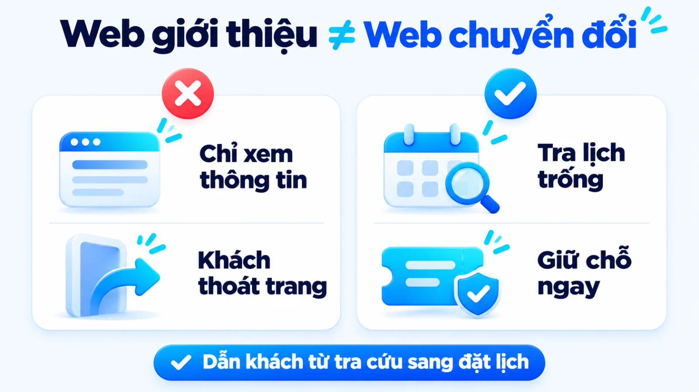
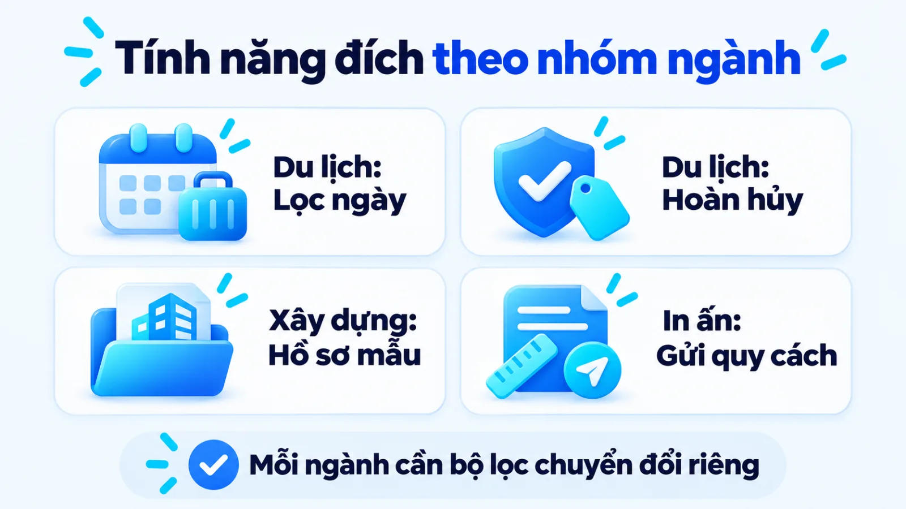
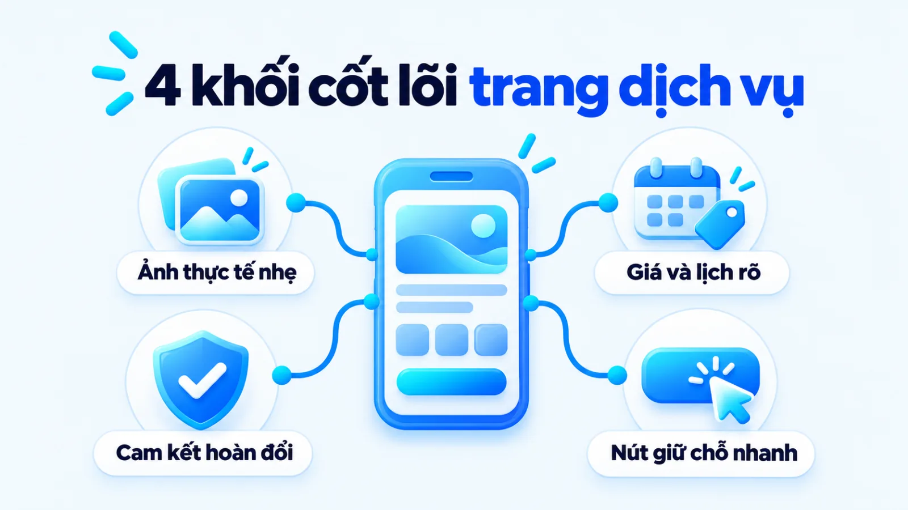
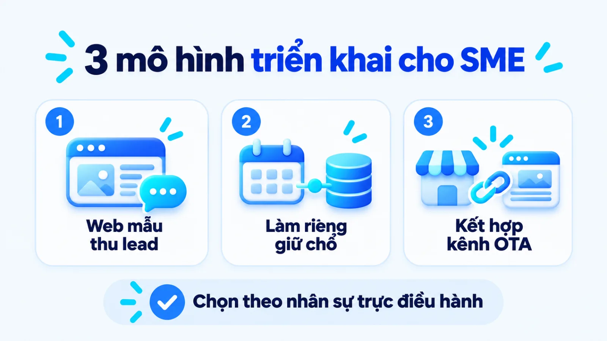
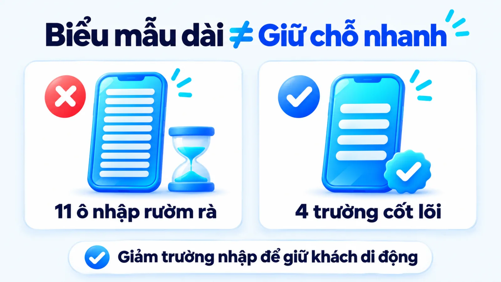
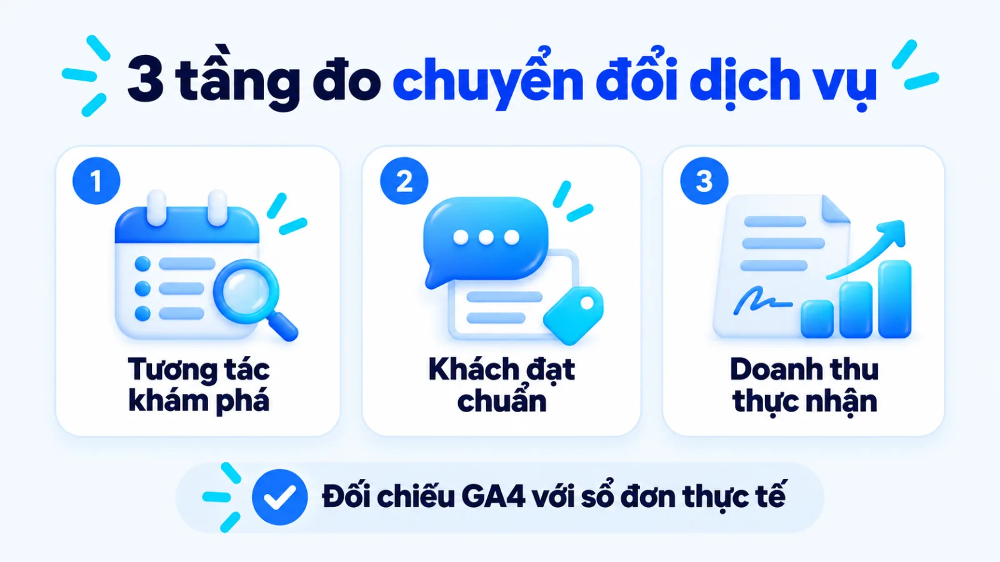

Thiết kế website du lịch và dịch vụ cho SME
Thiết kế website du lịch là quá trình xây dựng nền tảng số giúp khách hàng tra cứu lịch trình, kiểm tra năng lực cung ứng và chuyển đổi thành hành động đặt chỗ, giữ lịch hoặc gửi yêu cầu tư vấn dịch vụ. Với doanh nghiệp vừa và nhỏ, quyết định làm trang web thực chất là bài toán cân đối giữa mức độ tự động hóa trên giao diện với quy mô điều hành thực tế. Nếu tích hợp cổng thanh toán tự động phức tạp khi quỹ phòng hoặc lịch khởi hành vẫn kiểm tra thủ công, doanh nghiệp dễ tốn ngân sách duy trì mà lại phát sinh lỗi trùng lịch hoặc mất khách ở bước điền biểu mẫu. Tôi là Lê Tuấn Việt, Marketing Leader tại TAKI Group. Trong bài viết này, tôi phân tích ranh giới tính năng giữa các nhóm ngành dịch vụ, tiêu chí chọn mô hình giữ chỗ vừa sức và cách đọc dữ liệu chuyển đổi để tối ưu hiệu quả đón khách thật.
- Đăng ngày
- Cập nhật

Tóm tắt nhanh
- Thiết kế website du lịch và dịch vụ khác web bán lẻ ở chỗ sản phẩm là năng lực phục vụ theo khung giờ hoặc quy cách riêng, nên ưu tiên giải quyết niềm tin và kiểm tra lịch trống trước khi yêu cầu thanh toán.
- Doanh nghiệp vừa và nhỏ chưa có nhân sự cập nhật quỹ phòng hoặc lịch đoàn theo thời gian thực nên chọn mô hình biểu mẫu giữ chỗ nhanh thay vì đầu tư hệ thống thanh toán tự động cồng kềnh.
- Quy trình triển khai bốn bước cần khóa chặt từ luồng xử lý đơn nội bộ, cấu trúc trang đích di động, sự kiện đo lường chuyển đổi đến nghiệm thu tốc độ tải trang theo ngưỡng Core Web Vitals.
- Hiệu quả trang dịch vụ phải được đọc qua ba tầng tách biệt gồm tương tác tìm kiếm lịch trình, khách hàng tiềm năng đạt chuẩn gửi yêu cầu và doanh thu thực nhận sau khi trừ hoàn hủy.
Mục lục bài viết8 phần
Thiết kế website du lịch và dịch vụ là gì?
Thiết kế website du lịch và website dịch vụ là quá trình xây dựng nền tảng số giúp khách hàng tra cứu lịch trình, kiểm tra năng lực cung ứng và chuyển đổi thành hành động đặt chỗ, giữ lịch hoặc gửi yêu cầu báo giá. Khác với trang giới thiệu thụ động, cấu trúc trang dịch vụ phải giải quyết bài toán niềm tin trước khi khách hàng trải nghiệm thực tế.
Trong lộ trình hoàn thiện chiến lược 7P trong dịch vụ (mô hình bảy yếu tố tiếp thị dịch vụ), trang web đóng vai trò là bằng chứng vật lý trên môi trường số. Khi tổ chức tốt UI/UX (User Interface/User Experience, giao diện và trải nghiệm người dùng) cùng chuẩn Responsive (thiết kế hiển thị thích ứng đa thiết bị), doanh nghiệp giúp người xem tháo gỡ tâm lý ngập ngừng để bước sang khâu đặt cọc hoặc yêu cầu tư vấn.

Khác biệt giữa website dịch vụ và web bán hàng
Điểm khác biệt cốt lõi giữa trang dịch vụ và trang bán lẻ hàng hóa vật lý nằm ở tính vô hình của sản phẩm, độ biến thiên của giá theo thời điểm và quy trình xác nhận tồn kho. Để tránh áp nhầm giao diện giỏ hàng bán lẻ sang lĩnh vực lữ hành hay dịch vụ kỹ thuật, người phụ trách cần phân biệt ba cặp khái niệm dễ nhầm trong vận hành.
Thứ nhất, trang hồ sơ năng lực thụ động khác hẳn website dịch vụ tối ưu đặt chỗ: một bên chỉ đăng bài giới thiệu tĩnh, còn một bên dẫn người xem từ lịch trình đến nút kiểm tra chỗ trống. Thứ hai, biểu mẫu gửi yêu cầu giữ chỗ khác với Booking Engine (hệ thống đặt chỗ và thanh toán trực tuyến thời gian thực) kết nối PMS (Property Management System, phần mềm quản trị cơ sở lưu trú).
Thứ ba, lưu lượng đọc bài cẩm nang điểm đến khác với khách hàng tiềm năng đạt chuẩn có nhu cầu khởi hành thật. Theo tài liệu hướng dẫn sự kiện khuyến nghị của Google Analytics Help trên GA4 (Google Analytics 4, công cụ phân tích website của Google), hệ thống tách rõ sự kiện thu thập yêu cầu tư vấn (generate_lead) khỏi nhóm sự kiện thanh toán trực tiếp (begin_checkout, purchase) theo hai luồng giao dịch này.
Ba mô hình thiết kế website khách sạn và lữ hành
Không phải đơn vị lữ hành hay cơ sở lưu trú nào cũng cần cổng thanh toán thẻ tự động ngay từ ngày đầu hoạt động. Dựa trên độ phức tạp của sản phẩm và năng lực điều hành nội bộ, ba mô hình thiết kế website khách sạn và lữ hành phổ biến cho SME (Small and Medium Enterprise, doanh nghiệp vừa và nhỏ) gồm:
- Trang đích thu thập yêu cầu tư vấn (Lead Generation): Phù hợp cho đoàn MICE (du lịch kết hợp hội nghị, sự kiện) hoặc gói nghỉ dưỡng cần tư vấn viên thiết kế lịch trình kèm báo giá riêng.
- Website giữ chỗ chờ điều hành xác nhận (Request to Book): Khách chọn ngày khởi hành, số lượng người và gửi yêu cầu giữ chỗ không cần thanh toán ngay để bộ phận điều hành kiểm tra quỹ phòng rồi xác nhận lại.
- Hệ thống đặt chỗ và thanh toán tức thì (Instant Booking): Tích hợp cổng thanh toán trực tuyến và đồng bộ tồn kho phòng hoặc số ghế trống theo thời gian thực, cho phép khóa chỗ tự động xuyên suốt ngày đêm không cần chờ nhân sự duyệt.
Khi tìm hiểu cách tạo website chuẩn chuyển đổi, nhiều doanh nghiệp băn khoăn về thời gian và ngân sách dựng trang ban đầu. Trong các dự án ứng dụng AI (trí tuệ nhân tạo) và Vibe Coding (lập trình bằng ngôn ngữ tự nhiên) để xây dựng website, landing page cùng hệ thống quản trị vận hành doanh nghiệp do tôi triển khai, cách tiếp cận đi từ giao diện tinh gọn giúp đội ngũ rút ngắn đáng kể thời gian phát triển và kiểm chứng luồng đón khách thực tế trước khi mở rộng tính năng.
Cấu trúc tính năng theo đặc thù từng nhóm ngành
Mỗi nhóm ngành dịch vụ có chu kỳ cân nhắc và cách định giá khác nhau, đòi hỏi bộ tính năng trọng tâm riêng thay vì dùng chung một giao diện mẫu. Nhóm du lịch và khách sạn ưu tiên bộ lọc thời gian thực cùng lịch trống, trong khi website xây dựng và thiết kế website in ấn cần công cụ ước tính thông số kỹ thuật và hồ sơ dự án mẫu.
Để giúp chủ doanh nghiệp xác định đúng hạng mục cần đưa vào đầu bài thiết kế, bảng dưới đây đối chiếu cấu trúc tính năng và hành vi mua giữa nhóm lữ hành, lưu trú với nhóm dịch vụ kỹ thuật theo bốn tiêu chí cốt lõi.
| Tiêu chí đối chiếu | Du lịch và khách sạn | Xây dựng và in ấn |
|---|---|---|
| Đặc thù đơn hàng | Sản phẩm theo lịch khởi hành hoặc quỹ phòng giới hạn theo ngày, giá biến động theo mùa vụ | Dịch vụ thi công hoặc gia công theo bản vẽ riêng, báo giá phụ thuộc khối lượng và vật liệu |
| Thông tin cần kiểm | Lịch trình chi tiết, hạng phòng, dịch vụ bao gồm, phụ thu cuối tuần và chính sách hoàn hủy | Hồ sơ công trình thực tế, bảng thông số vật tư, quy cách thành phẩm và năng lực nhà xưởng |
| Công cụ tương tác | Bộ lọc theo điểm đến, thời lượng, kiểm tra lịch trống và biểu mẫu giữ chỗ nhanh trên di động | Bảng chọn quy cách kỹ thuật, công cụ ước tính chi phí sơ bộ và ô tải lên tệp bản vẽ thiết kế |
| Mục tiêu chuyển đổi | Gửi yêu cầu giữ chỗ, đặt lịch tư vấn lịch trình đoàn hoặc thanh toán tiền cọc trực tuyến | Gửi yêu cầu báo giá kèm thông số kỹ thuật, đặt lịch khảo sát hiện trạng hoặc nhận mẫu thử |
Giới hạn khi đọc bảng: bảng trên phân tách theo mô hình giao dịch thuần túy của hai nhóm ngành. Với các đơn vị tổ chức sự kiện kết hợp lữ hành hoặc thi công gian hàng trọn gói, bạn cần kết hợp cả tính năng lịch trống lẫn biểu mẫu nhận bản vẽ kỹ thuật trên cùng một hệ thống.

Tính năng đặt chỗ cho du lịch và lưu trú
Người mua dịch vụ lữ hành và lưu trú luôn tìm câu trả lời cho ba câu hỏi trước khi đặt cọc: lịch trình đi những đâu, tổng chi phí thực trả là bao nhiêu và nếu bận đột xuất thì có đổi ngày được không. Do đó, trang chi tiết tour hoặc hạng phòng phải đặt bảng lịch khởi hành, hạng mục bao gồm và không bao gồm cùng chính sách hoàn hủy ngay trong tầm mắt người đọc.
Về mặt hiển thị tìm kiếm, theo tài liệu kỹ thuật của Google Search Central về dữ liệu lưu trú, việc khai báo Schema VacationRental (dữ liệu có cấu trúc cho cơ sở lưu trú) giúp công cụ tìm kiếm hiểu rõ thuộc tính phòng, vị trí, hình ảnh, mức giá và đánh giá để hiển thị kết quả giàu thông tin. Tính năng này giúp người dùng đối chiếu điều kiện phòng ngay từ trang kết quả tìm kiếm trước khi bấm vào website.
Cấu trúc báo giá cho website xây dựng và in ấn
Khác với khách đặt phòng theo đêm, khách hàng truy cập website xây dựng hoặc tìm kiếm dịch vụ thiết kế website in ấn mang tâm lý kiểm định năng lực nhà thầu và dò khung ngân sách. Họ không thể bấm nút thanh toán ngay khi chưa biết đơn giá trên mỗi mét vuông thi công hay chi phí in theo từng định lượng giấy và số lượng bản.
Vì vậy, trang dịch vụ cần xoay quanh thư viện dự án lọc theo loại công trình hoặc chất liệu, kèm bảng ước tính chi phí và ô đính kèm bản vẽ. Theo khuyến nghị trong tài liệu Website Forms Usability của Nielsen Norman Group dựa trên thử nghiệm người dùng trên máy tính và di động, việc lược bỏ trường nhập thừa và nhóm thông tin theo trình tự hợp lý giúp giảm tải nhận thức, hạn chế bỏ dở biểu mẫu báo giá.

Khi nào chọn web mẫu, làm riêng hay kênh OTA?
Doanh nghiệp vừa và nhỏ nên chọn phương án triển khai dựa trên số lượng gói dịch vụ, tần suất biến động lịch trống và năng lực nhân sự vận hành hàng ngày. Khi chưa có bộ phận điều hành cập nhật tồn kho phòng hoặc chỗ trống theo thời gian thực, việc làm hệ thống đặt chỗ tự động riêng sẽ gây lãng phí và dễ dẫn đến lỗi trùng lịch.
Bán phòng trên OTA (Online Travel Agency, đại lý du lịch trực tuyến như Agoda, Booking.com, Traveloka) giúp có khách nhanh nhưng giảm biên lợi nhuận vì phí hoa hồng trên từng đơn. Ngược lại, làm website riêng giúp chủ động thu thập dữ liệu khách hàng tự khai báo để chăm sóc khách cũ, dù tốn chi phí kéo truy cập ban đầu. Bảng dưới đây đối chiếu ba phương án đầu tư theo nguồn lực của SME.
| Phương án đầu tư | Phù hợp khi | Đánh đổi cần chấp nhận |
|---|---|---|
| Web mẫu thu lead | Danh mục ít gói dịch vụ cố định, giá linh hoạt theo đoàn và cần ra mắt nhanh để đón khách | Khó tùy biến bộ lọc nhiều tầng, điều hành viên phải kiểm tra lịch trống và xác nhận thủ công |
| Làm riêng có giữ chỗ | Danh mục tour và phòng lớn, cần bộ lọc sâu theo lịch trình hoặc kết nối phần mềm quản lý nội bộ | Chi phí đầu tư ban đầu cao hơn, cần nhân sự cập nhật quỹ phòng và quy trình nghiệm thu kỹ thuật |
| Kênh OTA và trang đích | Cơ sở lưu trú mới cần tận dụng lưu lượng sẵn có trên sàn trung gian và chạy chiến dịch ngắn hạn | Phải trả chiết khấu hoa hồng cao trên mỗi đơn đặt và khó sở hữu dữ liệu khách hàng để bán lại |
Giới hạn khi đọc bảng: ba phương án này không loại trừ lẫn nhau mà có thể phối hợp theo từng giai đoạn trong chiến lược digital marketing của doanh nghiệp. Tôi ưu tiên phương án kết hợp gian hàng OTA để lấy độ phủ ban đầu với một website gọn nhẹ thu thập yêu cầu đặt trực tiếp cho khách đoàn và khách cũ, trước khi đầu tư cổng thanh toán tự động riêng.

Quy trình 4 bước thiết kế website dịch vụ cho SME
Quy trình thiết kế website dịch vụ cho doanh nghiệp vừa và nhỏ gồm bốn bước nối tiếp từ chốt mô hình chuyển đổi, thiết kế kiến trúc trang đích, tích hợp công cụ giữ chỗ và đo lường đến kiểm thử hiệu năng di động. Mỗi bước phải có đầu ra kiểm tra được trước khi chuyển sang giai đoạn lập trình giao diện.
- 01Chốt mô hình và luồng đơnKhóa rõ hành động mục tiêu trên trang và điểm nhận thông tin của đội điều hành.
- 02Dựng cấu trúc và bộ lọcThiết kế cây thư mục theo ý định tìm kiếm, bảng giá minh bạch và bộ lọc di động.
- 03Tích hợp giữ chỗ và đo lườngGắn biểu mẫu đặt lịch ít ma sát, khai báo dữ liệu có cấu trúc và cài đặt sự kiện.
- 04Kiểm thử tốc độ di độngĐo Core Web Vitals (chỉ số trải nghiệm trang), kiểm tra đa thiết bị và bàn giao lại.
Bước 1: Chốt mô hình chuyển đổi và luồng dữ liệu
Ở bước đầu tiên, người phụ trách cần xác định rõ hành động mục tiêu trên từng nhóm trang là gửi yêu cầu báo giá, giữ chỗ chờ duyệt hay đặt cọc trực tuyến. Bạn cũng phải quy định điểm đổ dữ liệu về email, nhóm Zalo điều hành hoặc phần mềm quản lý kèm thời gian phản hồi tối đa. Khi cần phân bổ lại nguồn lực đa kênh, doanh nghiệp nên thực hiện hoạch định chiến lược marketing trước khi chốt đầu bài kỹ thuật.
Đầu ra: sơ đồ luồng xử lý đơn hàng nội bộ ghi rõ trường thông tin cần thu, người nhận thông báo và cam kết thời gian liên hệ lại.
Bước 2: Thiết kế cấu trúc trang đích và bộ lọc
Đội ngũ triển khai cần lập bản đồ trang (sitemap) phân tách rõ nhóm trang danh mục dịch vụ, trang chi tiết gói tour hoặc hạng phòng, trang hồ sơ công trình và cụm bài cẩm nang giải đáp thắc mắc cho người đọc. Trên giao diện điện thoại, thanh bộ lọc chỉ nên giữ lại vài tiêu chí quyết định như điểm đến, khoảng giá và thời lượng để không che khuất nội dung chính.
Đầu ra: bản thiết kế khung dây (wireframe) cho trang chủ, trang danh mục và trang chi tiết dịch vụ có đủ khối bằng chứng thực tế cùng bảng giá minh bạch.
Bước 3: Tích hợp đặt lịch, thanh toán và đo lường
Đơn vị thiết kế cần lập trình biểu mẫu giữ chỗ hoặc kết nối cổng thanh toán, đồng thời khai báo dữ liệu có cấu trúc và gắn mã theo dõi sự kiện chuyển đổi. Mỗi hành động bấm nút gọi, mở khung chat Zalo hoặc hoàn tất gửi biểu mẫu đều phải gắn tham số phân biệt trang nguồn để phục vụ tối ưu khi triển khai kết hợp SEO và quảng cáo Google sau khi ra mắt.
Đầu ra: danh sách sự kiện chuyển đổi hoạt động chính xác trên môi trường kiểm thử và đơn đặt thử nghiệm đổ về đúng kênh tiếp nhận của bộ phận điều hành.
Bước 4: Kiểm thử tốc độ, di động và bàn giao
Trước khi vận hành, bộ phận kỹ thuật cần nén hình ảnh thực tế sang định dạng nhẹ, kiểm tra thao tác chọn lịch trên màn hình cảm ứng và đo hiệu năng theo tài liệu Core Web Vitals của Google Search Central (bộ chỉ số trải nghiệm trang cốt lõi của Google). Website phải phản hồi mượt ở cả ba chỉ số: tốc độ hiển thị nội dung lớn nhất (LCP), độ phản hồi tương tác khi bấm bộ lọc hoặc chọn lịch (INP) và độ ổn định bố cục (CLS).
Đầu ra: biên bản nghiệm thu tốc độ tải trang trên mạng di động, tài khoản quản trị gốc và tài liệu hướng dẫn nhân sự cập nhật bảng giá, lịch trình.
Ba lỗi khi thiết kế website du lịch làm mất khách
Ba nguyên nhân phổ biến khiến dự án thiết kế website du lịch có lượt truy cập nhưng ít khách đặt lịch là biểu mẫu yêu cầu quá nhiều thông tin ngay bước đầu, tải ảnh và video nặng làm chậm trang di động, và ẩn chi phí phụ thu cùng chính sách hoàn hủy đến bước cuối.
Tại sao khách đã bấm vào nút đặt tour nhưng lại thoát ra ngay ở màn hình kế tiếp? Câu trả lời thường nằm ở độ ma sát của giao diện di động. Ba điểm gãy trên giao diện di động dưới đây là nơi doanh nghiệp cần ưu tiên điều chỉnh trước tiên:
- Biểu mẫu đòi điền quá nhiều thông tin sớm: Bắt khách nhập số căn cước, ngày sinh từng thành viên và địa chỉ chi tiết ngay khi họ mới muốn kiểm tra chỗ trống. Cách sửa đúng là chỉ thu thập tên, số điện thoại, ngày dự kiến và số lượng người ở bước đầu, phần thông tin hành khách thu sau khi đã xác nhận còn chỗ.
- Tải ảnh và video gốc chưa nén làm chậm trang di động: Đăng trực tiếp ảnh khu nghỉ dưỡng hoặc tệp bản vẽ dung lượng lớn làm màn hình điện thoại chờ tải lâu. Cách làm đúng là chuyển ảnh sang định dạng nén nhẹ, bật chế độ tải chậm (lazy loading) và ưu tiên hiển thị phần văn bản lịch trình trước.
- Ẩn phụ thu và điều kiện hoàn hủy tới bước thanh toán: Chỉ để giá khởi điểm thấp ở đầu trang nhưng cộng thêm phí dịch vụ, phụ thu cuối tuần ở bước cuối làm khách mất niềm tin. Cách làm đúng là đặt bảng tính tổng chi phí minh bạch và tóm tắt điều kiện đổi lịch ngay cạnh nút giữ chỗ.
Tác động của tốc độ tải trang trên thiết bị di động đã được lượng hóa rõ qua các dữ liệu chuẩn ngành. Theo báo cáo năm 2018 của Google và SOASTA công bố trên Think with Google (phân tích bằng học máy trên dữ liệu mẫu lớn các trang đích di động toàn cầu), khi thời gian tải trang trên thiết bị di động tăng từ 1 giây lên 3 giây, xác suất người dùng thoát trang ngay lập tức tăng thêm 32%, và nếu kéo dài từ 1 giây lên 5 giây thì xác suất rời bỏ trang tăng tới 90%.
Ở chiều ngược lại, theo nghiên cứu Milliseconds Make Millions năm 2020 của Deloitte Digital và Google phân tích hàng triệu phiên truy cập di động tại châu Âu và Mỹ, việc cải thiện tốc độ tải trang di động thêm 0,1 giây trong nhóm ngành du lịch đi kèm mức tăng 10,1% tỷ lệ chuyển đổi và tăng 1,9% giá trị đơn hàng trung bình.
Ví dụ biên tập, không phải kết quả khách hàng thật
Rút gọn biểu mẫu đặt tour và nén ảnh trang đích trên di động
Trong ví dụ biên tập, không phải kết quả khách hàng thật dưới đây, một đơn vị lữ hành dẫn khách từ quảng cáo về trang tour nhưng trang tải chậm và biểu mẫu đòi nhập quá nhiều mục. Khi đổi sang ảnh WebP (định dạng ảnh nén nhẹ cho web), công khai phụ thu và chỉ giữ lại các trường cốt lõi gồm tên, số điện thoại, ngày đi cùng số khách, luồng gửi yêu cầu thông suốt hơn hẳn.
Bài học từ tình huống biên tập trên rất rõ ràng: giảm ma sát nhập liệu trên điện thoại luôn rẻ và nhanh hơn việc đổ thêm tiền mua lưu lượng truy cập mới. Muốn tăng đơn thì phải gỡ điểm nghẽn trước tiên.

Cách đo hiệu quả và đọc chỉ số chuyển đổi
Đo lường website du lịch và dịch vụ không thể chỉ nhìn vào tổng lượt xem trang mà phải tách thành ba tầng: tín hiệu tương tác tìm kiếm lịch trình, khách hàng tiềm năng đạt chuẩn gửi yêu cầu hoặc đặt cọc, và doanh thu thực nhận sau khi trừ hoàn hủy.
Theo tài liệu hướng dẫn phương pháp nghiên cứu trải nghiệm người dùng của Nielsen Norman Group về chuyển đổi vi mô, việc theo dõi những bước đệm trung gian giúp doanh nghiệp phát hiện sớm điểm nghẽn giao diện khi số đơn hoàn tất cuối phễu còn ít. Để áp dụng nguyên tắc chuyển đổi vi mô trên website vào ngành dịch vụ, người phụ trách có thể dùng khung đo lường ba tầng dưới đây.
| Tầng đo lường | Cách tính và nguồn dữ liệu | Giới hạn khi đọc số |
|---|---|---|
| Tầng 1: Tương tác | Đếm lượt lọc lịch trình, mở bảng giá, tải tệp PDF hoặc bấm nút chat qua sự kiện tùy chỉnh | Chỉ phản ánh mức độ quan tâm ban đầu, không chứng minh khách hàng có đủ ngân sách hay sẽ đặt chỗ |
| Tầng 2: Khách đạt chuẩn | Đo sự kiện gửi biểu mẫu giữ chỗ (generate_lead) hoặc bắt đầu đặt cọc (begin_checkout) trên trang | Chưa loại trừ thông tin trùng lặp, số điện thoại sai hoặc khách hỏi giá nhưng ngoài vùng phục vụ |
| Tầng 3: Doanh thu thực | Đối chiếu số đoàn khởi hành, số đêm phòng thực tế và doanh thu sau hoàn hủy từ bảng quản lý đơn | Có độ trễ từ lúc khách xem web đến khi chốt đơn qua Zalo, cần gắn mã nguồn để tránh quy kết lệch |
Giới hạn khi đọc bảng: hành trình đặt tour gia đình, đặt phòng đoàn hoặc ký hợp đồng xây dựng, in ấn hiếm khi khép kín trong một phiên truy cập. Khách thường xem lịch trình trên điện thoại, chụp màn hình gửi người thân hoặc đồng nghiệp duyệt, rồi vài ngày sau mới nhắn Zalo chốt cọc. Vì vậy, bạn cần đọc dữ liệu phân tích web theo chu kỳ tuần hoặc tháng kết hợp với sổ theo dõi nguồn khách của bộ phận tư vấn.
Khi đối chiếu liên tầng, sự chênh lệch giữa các bước sẽ chỉ ra đúng khâu cần sửa. Nếu tầng tương tác cao nhưng tầng khách đạt chuẩn thấp, vấn đề thường nằm ở mức giá, lịch khởi hành chưa hợp lý hoặc thiếu chính sách hoàn đổi minh bạch. Ngược lại, nếu tầng khách đạt chuẩn có nhiều yêu cầu đổ về nhưng tầng doanh thu thực chốt thấp, người quản lý cần kiểm tra lại tốc độ gọi lại của đội tư vấn và chất lượng tệp từ khóa đang kéo truy cập.

Câu hỏi thường gặp về thiết kế website du lịch
Khi nào doanh nghiệp chưa nên làm hệ thống đặt chỗ riêng?
Không nên đầu tư cổng đặt chỗ và thanh toán tự động riêng khi danh mục tour chủ yếu thiết kế theo yêu cầu đoàn, giá biến động theo mùa hoặc quỹ phòng nhỏ chưa có người cập nhật lịch trống theo thời gian thực. Trong giai đoạn này, biểu mẫu giữ chỗ nhanh kết hợp xác nhận qua điện thoại hoặc Zalo giúp kiểm soát tồn kho chính xác và tiết kiệm chi phí vận hành kỹ thuật.
Nên chọn web mẫu dựng sẵn hay lập trình riêng theo ngân sách?
Doanh nghiệp mới thử nghiệm thị trường hoặc có ít gói dịch vụ tiêu chuẩn nên chọn giao diện mẫu đã tối ưu tốc độ di động để dồn ngân sách cho hình ảnh thực tế và quảng cáo thu hút khách. Phương án thiết kế riêng chỉ thực sự cần thiết khi bạn có quy tắc tính giá nhiều biến số, bộ lọc lịch trình đa tầng hoặc cần đồng bộ hai chiều với phần mềm quản lý lưu trú và CRM (hệ thống quản lý quan hệ khách hàng).
Vì sao website du lịch có nhiều lượt xem nhưng ít khách đặt?
Tình trạng có nhiều lượt xem nhưng ít khách đặt thường xảy ra khi lưu lượng truy cập tập trung vào các bài cẩm nang du lịch chung mà thiếu nút dẫn sang gói tour liên quan, hoặc trang chi tiết dịch vụ ẩn phụ thu và chính sách hoàn hủy. Bên cạnh đó, ảnh chất lượng cao chưa nén làm trang tải chậm trên mạng di động và biểu mẫu đòi điền quá nhiều ô cũng khiến khách thoát trang giữa chừng.
Website xây dựng và in ấn cần tính năng gì khác web du lịch?
Khác với du lịch cần kiểm tra ngày khởi hành và phòng trống, khách truy cập website xây dựng và thiết kế website in ấn cần thẩm định năng lực thi công thực tế và ước tính chi phí theo thông số kỹ thuật. Vì vậy, hai nhóm ngành này phải ưu tiên thư viện dự án phân loại theo chất liệu hoặc quy mô công trình, bảng quy cách tiêu chuẩn và biểu mẫu nhận tệp bản vẽ để báo giá nhanh.
Đâu là dấu hiệu cần nâng cấp từ form giữ chỗ lên thanh toán?
Doanh nghiệp nên nâng cấp từ biểu mẫu giữ chỗ lên cổng thanh toán trực tuyến khi sản phẩm đã chuẩn hóa thành các gói cố định, lượng yêu cầu đặt dịch vụ mỗi ngày vượt quá sức xử lý thủ công của đội tư vấn và khách thường đặt ngoài giờ hành chính. Điều kiện bắt buộc đi kèm là hệ thống phải đồng bộ tồn kho tự động để không xảy ra lỗi khách đã chuyển tiền nhưng hết chỗ.
Làm sao đo khách xem trên web nhưng chốt đơn qua Zalo, hotline?
Người phụ trách marketing cần gắn sự kiện theo dõi lượt nhấp nút Zalo và cuộc gọi trên công cụ phân tích như các chuyển đổi vi mô, đồng thời chèn mã tham số nguồn truy cập vào tin nhắn mở đầu hoặc mã ưu đãi ngắn trên trang đích. Khi bộ phận tư vấn ghi nhận mã này vào bảng theo dõi đơn hàng, bạn sẽ đối chiếu ngược được kênh nào thực sự mang lại doanh thu cuối cùng.
Kết luận
Hiệu quả của một dự án thiết kế website du lịch hay website dịch vụ không nằm ở việc tích hợp thật nhiều hiệu ứng đồ họa và cổng thanh toán đắt tiền, mà nằm ở độ khớp giữa luồng giữ chỗ trên trang với năng lực đón tiếp, báo giá hàng ngày của doanh nghiệp. Chọn đúng mô hình chuyển đổi ngay từ đầu giúp đội ngũ tiết kiệm ngân sách kỹ thuật và giữ trọn khách hàng tiềm năng trên thiết bị di động.
Ngay trong tuần này, bạn có thể tự mở trang dịch vụ chủ lực của mình bằng mạng di động trên điện thoại, bấm thử từ bước xem bảng giá đến khi gửi yêu cầu giữ chỗ và đếm xem khách phải điền bao nhiêu ô thông tin. Mọi điểm khựng lại quá lâu hoặc bắt nhập liệu rườm rà đều là nơi bạn đang đánh rơi khách hàng mỗi ngày.
Khi doanh nghiệp mở rộng quy mô lên nhiều tuyến tour, nhiều hạng phòng hoặc cần kết nối đồng bộ giữa cấu trúc tìm kiếm, quảng cáo trả phí với hệ thống quản trị khách hàng tự động, việc chỉnh sửa từng biểu mẫu lẻ sẽ không còn đủ. Lúc này, bạn cần một kiến trúc thông tin và khung đo lường chuyển đổi được thiết kế đồng bộ ngay từ gốc thông qua chuyên mục Marketing để làm nền tảng mở rộng.
Trang web hiện tại của bạn đang hỗ trợ đội tư vấn chốt lịch nhanh hơn, hay vẫn chỉ là một cuốn hồ sơ tĩnh khiến khách xem xong rồi rời đi?